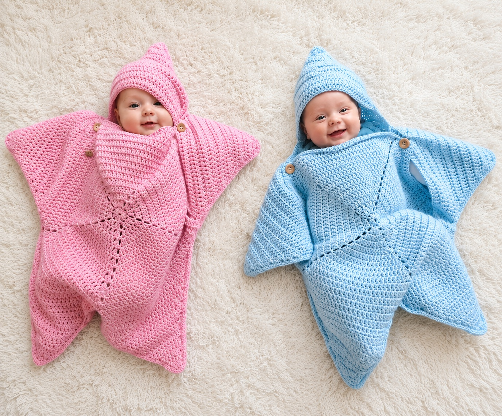
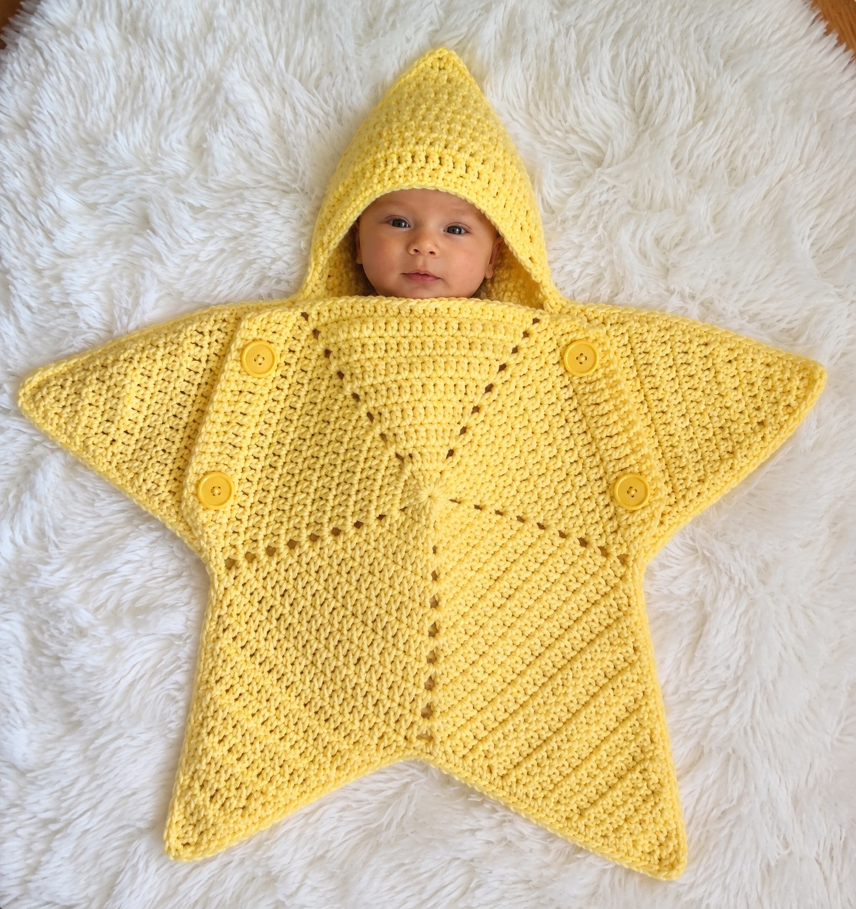
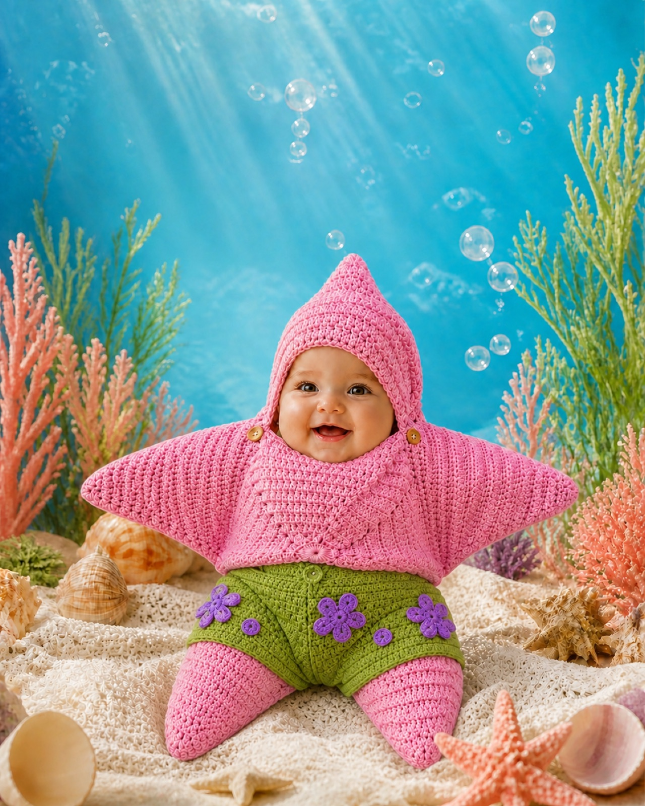
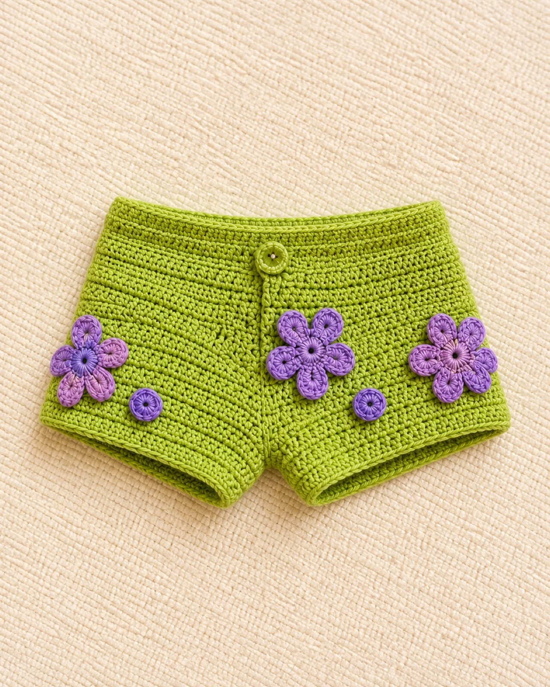

Patrón paso a paso
Instrucciones organizadas para acompañarte durante el proyecto.
⭐ Patrón digital de crochet
Convierte tus hilos en un traje lleno de ternura para esa etapa que pasa demasiado rápido… o crea una pieza diferente para ofrecer a tus clientes.
Acceso digital después de tu compra
Importante: Producto digital. No recibirás un traje físico.


Un recuerdo tejido, punto por punto
Hay prendas que usamos y olvidamos. Y hay otras que terminan formando parte de nuestros recuerdos.
Las primeras fotografías. Sus primeros meses. Ese cuerpecito diminuto que muy pronto dejará de ser tan pequeño.
“Yo hice esto para ti.” 🥹🧶
No es solamente otro proyecto de crochet. Puede convertirse en uno de esos pequeños recuerdos que guardamos para siempre.
Quiero crear ese recuerdo →El resultado
No necesitas imaginar cómo quedará. Haz cada estrella tan especial como el bebé que la llevará.
Dentro de tu ebook
Instrucciones organizadas para acompañarte durante el proyecto.
Referencias visuales que te ayudarán durante el tejido.
Incluye 0–3 meses y 3–6 meses.
Consúltalo desde teléfono, tablet o computadora.
Patrón del short verde con flores lila incluido.
Vuelve a consultarlo para tejer nuevas combinaciones.
Una aventura original bajo el mar
Y ahora puedes crearla con tus propias manos. 🧶
Rosa, verde, lila, azul… deja volar tu creatividad y convierte el mismo patrón en combinaciones completamente diferentes.
UN PATRÓN. ⭐ MUCHAS COMBINACIONES.

💚 Adicional incluido
Una combinación divertida de verde y lila para darle todavía más personalidad a tu pequeña estrella.
Quiero crear mi estrellitaConfianza en cada punto
Este diseño está desarrollado utilizando técnicas reales de crochet, con atención al proceso y a cada detalle.
NO ES UN PATRÓN GENERADO POR IA.Crochet real. Puntos reales. Un proyecto creado para ser tejido.Otra forma de mirarlo
Los trajes estrella para bebé llaman la atención por su forma adorable y diferente. Aprender a realizarlos puede sumar una nueva pieza a tu catálogo, sin promesas irreales: tú decides cómo adaptarla a tu estilo y a tus clientes.
Dos caminos, un patrón
Para tu bebé, un nieto, un regalo, un baby shower, unas fotografías o un recuerdo que lleve tus manos.
Para ampliar tu catálogo, recibir pedidos, probar colores y mostrar algo diferente a tus clientes.
¿Es para ti?
Inspiración
Toca una imagen para verla más grande.
Antes de continuar 💕
Recibirás las instrucciones para que puedas crear tu propio traje estrella.
No recibirás un traje físico por correo.Tu próximo proyecto empieza aquí
Un patrón completo, dos tallas y el short adicional en un solo PDF digital en español.
Sin dudas antes de empezar
No. Estás adquiriendo un patrón digital para aprender a realizar el traje estrella tú misma.
Incluye tallas de 0–3 meses y 3–6 meses.
En formato digital PDF.
Sí. Las instrucciones del short verde con flores lila están incluidas como complemento.
No. Está desarrollado utilizando técnicas reales de crochet.
Sí, puedes ofrecer tus productos terminados. El archivo digital no puede revenderse, copiarse, compartirse ni distribuirse.
No. Es un producto completamente digital.
para crear y recordar
Para tu bebé. Para alguien especial. O para ese pequeño emprendimiento que construyes con tus propias manos.